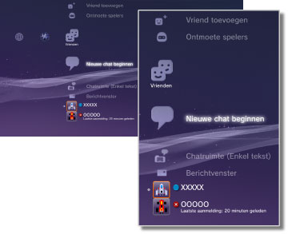

Vrienden > Categorie Vrienden
Categorie Vrienden
Om deze functie te gebruiken, zult u mogelijk uw systeemsoftware moeten updaten.
Stuur en ontvang berichten of chat met andere PS3™-gebruikers via PlayStation®Network. U moet (zich aanmelden voor) een PlayStation®Network-account aanmaken om deze functies te gebruiken. De volgende pictogrammen worden getoond onder  (Vrienden). De pictogrammen die worden weergeven, zijn afhankelijk van de gebruikscondities.
(Vrienden). De pictogrammen die worden weergeven, zijn afhankelijk van de gebruikscondities.

 |
Geblokkeerde personen | Een lijst van uw geblokkeerde personen weergeven. |
|---|---|---|
 |
Vriend toevoegen | Een aanvraag versturen om iemand aan uw vriendenlijst toe te voegen. |
 |
Ontmoete spelers | Een lijst weergeven van personen met wie u online PlayStation®3-games* hebt gespeeld. Selecteer dit pictogram om een bericht naar een speler te versturen of om een aanvraag te doen om een vriend toe te voegen. |
 |
Nieuwe chat beginnen | Start een chatsessie. |
 |
Chatruimte (Enkel tekst) | Dit pictogram wordt weergegeven als er een chatruimte is voor tekstchat. Als een nieuwe chatruimte wordt toegevoegd, wordt  weergegeven. weergegeven. |
 |
Spraak/video chatruimte | Dit pictogram wordt weergegeven tijdens stem-/videochat. |
 |
Berichtvenster | Nieuwe berichten aanmaken en berichten bekijken die u hebt ontvangen en verstuurd. |
 |
(uw online-id) | De avatar die u hebt geselecteerd bij het aanmaken van uw PlayStation®Network-account wordt hier weergegeven. |
|
(Naam van vriend) | Dit pictogram wijst op een persoon op uw vriendenlijst. Door dit pictogram te selecteren, kunt u berichten versturen of ontvangen of chatten met vrienden. |
| * |
Bepaalde games ondersteunen deze functie mogelijk niet. |
|---|
Opmerkingen
- Op het PS3™-systeem worden gebruikers die op uw vriendenlijst staan "Vrienden" genoemd. E-mails die u verstuurt of ontvangt onder (Vrienden) worden "berichten" genoemd.
- Er kunnen tot 50 spelers weergegeven worden onder
 (Ontmoete spelers). Als die limiet bereikt is, wordt de oudste invoer automatisch gewist telkens als er een nieuwe speler wordt toegevoegd.
(Ontmoete spelers). Als die limiet bereikt is, wordt de oudste invoer automatisch gewist telkens als er een nieuwe speler wordt toegevoegd. - Om een stemchat te houden, hebt u een audio-invoer-/uitvoerapparaat nodig (zoals een headset, apart verkrijgbaar). Om met video te chatten, hebt u ook een USB-camera nodig (apart verkrijgbaar).
- U kunt een compatibele USB-headset / Bluetooth® headset / USB-camera （EyeToy™) / PlayStation®Eye / USB-camera die voldoet aan USB video class (UVC) gebruiken op het PS3™-systeem.
- Gebruik een USB-hub die USB 2.0 ondersteunt als u een USB-camera met een hub aansluit. Als u een hub gebruikt die USB 2.0 niet ondersteunt, kan er beeldverslechtering voorkomen of wordt er mogelijk geen beeld weergegeven.
- Contacteer een handelaar die de randapparaten verkoopt voor meer informatie over de ondersteunde randapparaten en gebruiksinstructies.